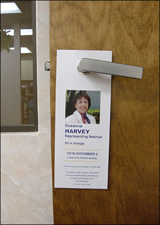

Door hangers design for Suzanne Harvey (for Ward 2 Democratic State Representative)
Suzanne Harvey is a Democratic candidate for State Representative in Nashua's Ward 2. She has been involved in electoral politics as a volunteer since 1964 and is running for one of the ward's three seats. She was motivated by having volunteered in the recent presidential primary and by weighing the results of the politically unbalanced New Hampshire legislature.
www.nashuademocrats.com/sharvey
